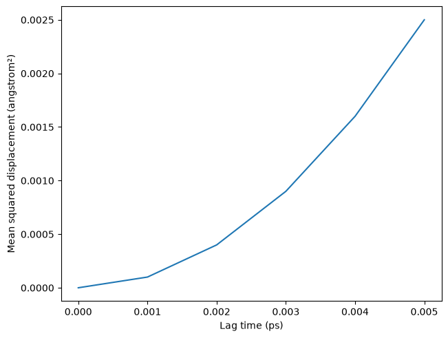
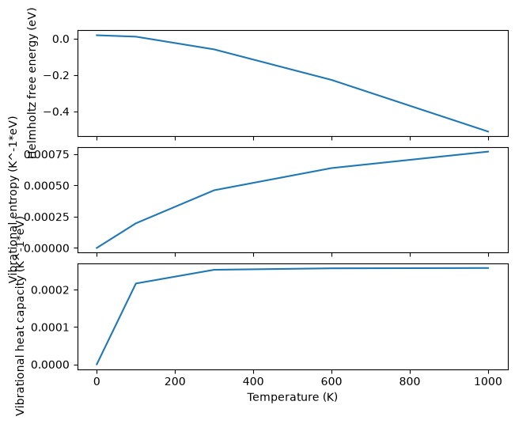
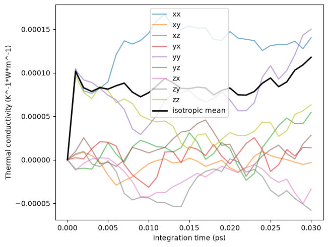

Materials response toolbox¶
Executable synthetic examples for httk-analyse. Numerical inputs use eV, angstrom and ps. These fixtures verify conventions; they are not predictions for a real material.
import numpy as np
from matplotlib import pyplot as plt
Elastic response¶
Engineering strain uses doubled off-diagonal strain components. Stress is tensile-positive.
from httk.analyse.matsci.elasticity import ElasticTensor
C = np.eye(6) * 0.5
C[:3, :3] = np.ones((3, 3)) + np.eye(3)
elastic = ElasticTensor(C)
assert np.isclose(elastic.bulk_modulus_hill, 4/3)
assert np.isclose(elastic.young_modulus([1, 0, 0]), elastic.young_modulus([1, 1, 1]))
elastic.bulk_modulus_hill
1.3333333333333333
Structure and motion¶
The displacement input is explicitly unwrapped and sampled at uniform physical times. A ballistic trace is quadratic; fitting it as diffusion would be inappropriate.
from httk.analyse.matsci.structure import radial_distribution
from httk.analyse.matsci.dynamics import mean_squared_displacement
from httk.analyse.plotting import plot_msd, plot_rdf
positions = np.array([[0,0,0], [1,0,0], [0,1,0.]])
rdf = radial_distribution([positions], np.eye(3)*8, [0,.5,1.1,1.6,2.])
motion = positions[None,:,:] + np.arange(20)[:,None,None] * np.array([.01,0,0])
msd = mean_squared_displacement(motion, .001, max_lag=5)
assert np.isclose(msd.trace[-1], .05**2)
figure, _ = plot_msd(msd)
plt.show()
plt.close(figure)

Harmonic thermodynamics¶
Mode weights are counts, not automatically normalized to three modes per atom. Zero and imaginary frequencies require an explicit omission policy.
from httk.analyse.matsci.phonons import harmonic_thermodynamics
from httk.analyse.plotting import plot_phonons
phonons = harmonic_thermodynamics([2, 3, 4], [0, 100, 300, 600, 1000])
assert phonons.free_energy[0] == phonons.zero_point_energy
figure, _ = plot_phonons(phonons)
plt.show()
plt.close(figure)

Electronic states¶
The sampled band gap is not a guarantee about unsampled points. Spin multiplicity and maximum occupation are explicit.
from httk.analyse.matsci.electronic import band_edges, electron_count
bands = band_edges([[-1,-.5], [1,1.5]], [[2,2],[0,0]], maximum_occupation=2, energy_reference=0)
assert bands.indirect_gap == 1.5
assert np.isclose(electron_count([0,10], [1,1], 1, temperature=300, spin_degeneracy=1), 1)
Surface references and kinetic barriers¶
The bulk reference counts stoichiometric atoms before excess atoms are added or removed. NEB barriers use the highest sampled image.
from httk.analyse.matsci.defects import surface_energy, neb_profile
surface = surface_energy(-5, -1, 4, {"A":1}, {"A":-1}, total_exposed_area=2)
assert surface.energy == 0
barrier = neb_profile([0,1,2], [0,.8,.2])
assert np.isclose(barrier.forward_barrier, .8)
Running transport integrals¶
This synthetic current exercises unit conversion and plotting. A real calculation needs a validated microscopic heat-current definition and convergence in time, size and replicas.
from httk.analyse.matsci.transport import thermal_conductivity
from httk.analyse.plotting import plot_transport
current = np.random.default_rng(13).normal(size=(200,3))
transport = thermal_conductivity(current, .001, temperature=300, volume=1000, max_lag=30)
figure, _ = plot_transport(transport)
plt.show()
plt.close(figure)

Derived-property MLIP parity¶
These synthetic paired responses illustrate comparisons beyond force RMSE. Real validation should use independent material/trajectory holdouts, matching structures, sampling grids, normalization and physical conditions. The deliberate perturbations below stand in for a second calculation, not a trained potential.
from httk.analyse.definitions import ELASTIC_TENSOR
from httk.analyse.matsci.validation import property_parity
predicted_elastic = ElasticTensor(np.asarray(elastic.stiffness) * 1.03)
upper = np.triu_indices(6)
labels = [f"C{i+1}{j+1}" for i,j in zip(*upper)]
elastic_parity = property_parity(np.asarray(elastic.stiffness)[upper],
np.asarray(predicted_elastic.stiffness)[upper], labels=labels, definition=ELASTIC_TENSOR)
reference_modes, predicted_modes = np.array([2.,3.,4.]), np.array([2.1,2.9,4.2])
assert np.all(reference_modes > 0) and np.all(predicted_modes > 0)
mode_parity = property_parity(reference_modes, predicted_modes,
labels=["matched mode 0", "matched mode 1", "matched mode 2"], definition=None) # no published definition yet
predicted_rdf = radial_distribution([positions * 1.25], np.eye(3)*8, rdf.edges)
assert predicted_rdf.edges == rdf.edges
rdf_parity = property_parity(rdf.g, predicted_rdf.g,
labels=[f"shell {i}" for i in range(len(rdf.g))], definition=None)
predicted_msd = mean_squared_displacement(motion * 1.02, .001, max_lag=5)
assert predicted_msd.times == msd.times and predicted_msd.kind == msd.kind == "msd"
msd_parity = property_parity(msd.trace, predicted_msd.trace,
labels=[f"lag {t} ps" for t in msd.times], definition=None)
assert all(result.statistics.rmse > 0 for result in
(elastic_parity, mode_parity, rdf_parity, msd_parity))
{label: result.statistics.rmse for label, result in
zip(["elastic", "modes", "RDF", "MSD"], [elastic_parity, mode_parity, rdf_parity, msd_parity])}
{'elastic': 0.02598076211353318,
'modes': 0.14142135623730964,
'RDF': 34.96971574396401,
'MSD': 5.160563018379509e-05}